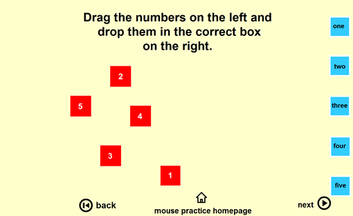
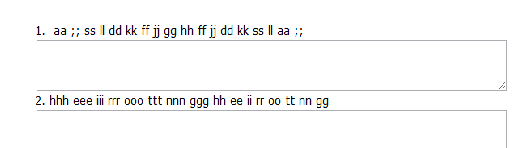

Other site designs could be set to train the user’s motor skills, either of continuous or discrete skill. These sites should simple and straight to the point with their goal such as having a game to practice said skills. This means, they should be interactive to produce a faster mastery progress. For example, there are websites that train the user how to use a mouse efficiently. As this is a continuous skill, it will not be forgotten after some time, much like swimming and riding a bike.
Another example is a site who’s goal is to train users how to fully use a keyboard. This website must be more entertaining than that of the mouse training as this is allocated as a discrete skill, a skill that can be easily forgotten if not used often. Because of this, making the site design and interactivity bland will create negative feelings for the user. E.g. the user will make excuses such as they don’t need to practice anymore, or they see it as a chore. On the other hand, making it into a game raises intrigue and user visits as it creates entertainment. An example of this is
